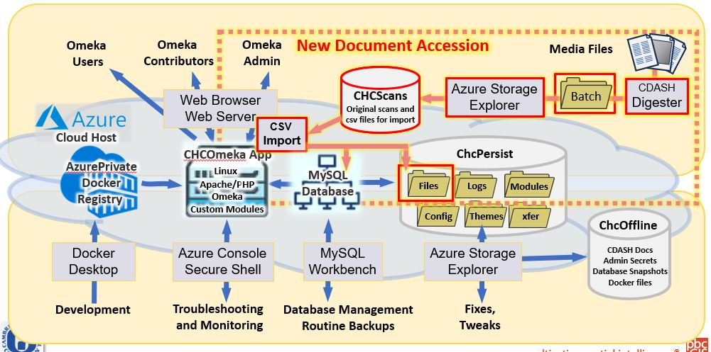
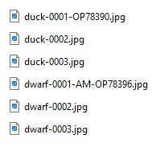
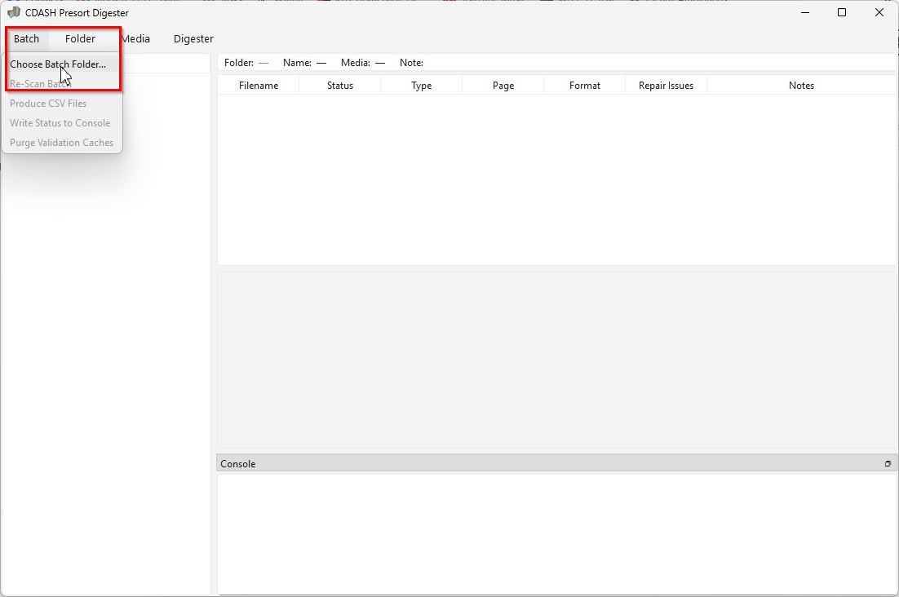
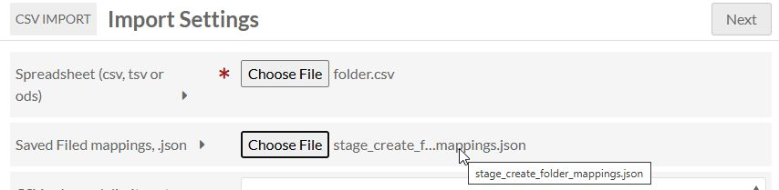
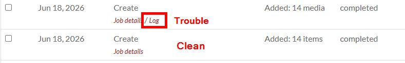
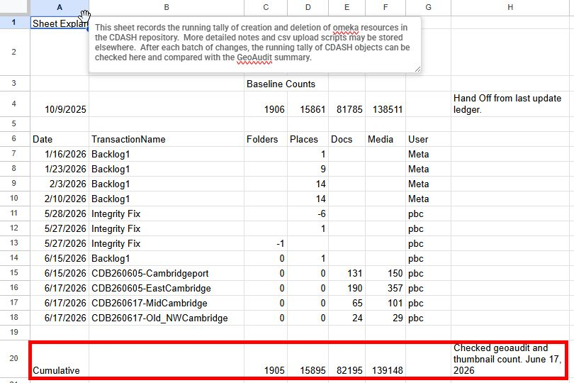

CDASH AcCession Workflow
This page describes the workflow for taking media files from the wild and making them ready for integration with the schema of folders and places the running CDASH repository. The elements highlighted in red in the diagram below illustrate the technical pathway that the Omeka / CDASH administrator will use to create CDASH documents from digital media files.

Topic Index
- Downloads
- Overview
- Preparing a Batch Folder
- Initializing a Batch
- Introducing the Test Batch
- Introducing the Batch Digester
- Batch Ready Names
- Interactive Batch grooming
- Generating the CSV Manifest Tables
- Upload the Batch to the Cloud
- CSV Import Module with CDASH Repeater Modification
- Preparing an Accession Transaction
- Generating Omeka Resources with the Modified CSV Import Tool
- Logging and Verifying Transactions
Downloads
Right-Click these links and paste into your browser URL Bar.
- Digester Program Version 1.1.2 Updated 8/14/26.
- Digester Test Batch
Overview of the Accession Process
CDASH is a repository of media files and metadata that is intended to be maintained and developed and preserved for a very long time. Many aspects of the accession process will be better understood in light of the idea that the fundamental task of the archivist is to screen and organize media in such a way that the collection of Reproduction Masters in the repository behave in a predictable way, to support activities -- such as rendering derived media previews within the current archive applications, and also that the collection of Reproduction Masters behave predictably when migrating to a successor repository without any loss of information or un-wanted rendering glitches.
The page on CDASH Admissible Media discusses the many traps that are likely to plague un-informed contributors. Please re-read that page to understand the principles that must be applied in order to prevent the very costly and embarrassing situations where faulty media files find their way into the repository.
The CDASH Batch Digester tool provides validation, previews and format-screening as it turns informally-organized batches of media into the formal Archival Information Package ready for systematic accession into CDASH. While the Digester has tools for limited repair of media files, problematic files finding their way into the accession process at this stage calls attention to problems in the Technical Lineage of media files that should be addressed upstream.
What is a Batch?
A CDASH Batch is a file-system folder that contains systematically named media folders and media files. The naming convention for batches, folders and tiles provides an identification scheme that follows each document and file into the repository and provides a back-link to the original batch and file. The CDASH Digester is a tool for developing the organization of a batch. The Digester creates a catalog and facilitates the grouping of media files into items of different types, which are associated with existing Places and Folders in the on-line CDASH repository.When the the batch and its files have been throughly validated, the digester prepares CSV manifest tables which are used in conjunction with Omeka CSV Import Tool (with the CDASH Repeater Modification) to materialize the new documents in CDASH with all of the necessary connections to existing places and folders. Once a batch has been processed through the Import tool, the transaction is recorded and the CDASH Batch is copied cold storage.
In the language of the Reference Model for Open Archival Information Systems (P.16) , a CDASH Batch serves as an Archival Information Package.
Preparing a Batch Folder
A Batch folder is a normal folder in the Windows file system. It starts out with a subfolder named media which has any number of batch-media folders which correspond with folders in the CDASH repository. Into these media folders, the archivist places media files, which will be associated as pages of new CDASH documents.
Tokenized File and Folder Names
The architecture of the Batch and of the accession process depends heavily on the mechanism of parsable, tokenized file and folder names. As an example of a tokenized file name consider the name of the outer folder of a Batch. The first step in creating a new CDASH Batch is to create a new folder whose name includes two tokens, separated by a hyphen.
Name for a Batch Folder
CDB[YYMMDD](a-z)-[Mnemonic Name] e.g. CDB260624-Box_40_EastCambridge
No spaces are allowed in file or folder names. Only alphanumeric characters, Hyphen, "-" is reserved as a delimiter between tokens and hyphenated address ranges. "_" is allowed to represent spaces in a tokenized word.
When this documentation refers to a token as Mnemonic it means that it is a string that is intended to remind the archivist of the subject of the resource and potentially the page order of sequential media files. Once the omeka resource ID has been validated, the digester replaces the mnemonic with a space-removed version of the linked CDASH folder or place. This mnemonic portion of the file name helps to keep the batch easily searchable by unassisted humans.
Initializing a Batch
The first stage of the accession process is carried out with Windows Explorer.
- Start an empty batch folder named in the form CDB[YYMMDD]-[Mneomic Subject].
- Within the batch folder create a sub-folder named media
Investigate New Document in CDASH and Physical Files
The archivist has some new files to add to the physical Survey files and to the CDASH repository. The first thing to do is figure out the which existing folder and place that the new document is gong to relate to in the running CDASH repository. Each CDASH document must be related to one place and one folder.
- Check CDASH to see if the document is associated with an existing cdash place and cdash folder.
- If the new document is not related to an existing CDASH place or Folder, then a new Place item and or Item-Set must be created in CDASH with the Omeka-S admin interface.
- While you are looking at these resources in Omeka, make a note of the Omeka resource ID for the Place (omeka item), and Folder (omeka item-set). The ID is the integer number that appears at the end of the URL for the resource.
Prepare a Batch Media Folder
The media sub-folder of the batch will be parent to several sub-folders that we call Batch Media Folders. A Batch Media Folder corresponds with a folder in CDASH, Initially, a batch media folder has a name as follows:
[Mnemonic Name]-OF[item-set-id] e.g. 128-136_Main_St-OF23789
The OF[item_set_id] refers to the Omeka resource ID of the CDASH folder. You can find this ID in the URL of the folder once you have chosen it in CDASH.
Once the batch is scanned with the digester the mnemonic name token wil be replaced with the actual CDASH folder name.
Initial Names for Media Files
Initially, individual media files in a folder can have any names at all, so long as media files representing sequential pages sort in page-order. Grouping files as pages of a document, assignment of a document type and associating documents with CDASH Places can be handled using the Media > Assign Metadata functions in the Digester's media menu.
Since media files are probably already given mnemonic names and index numbers associating them with documents and pages and since the archivist has already identified the CDASH Place item associated with each document, the digester is capable of using structured hints that can cut the effort of assigning metadata.

When the Digester encounters a sequence of files as shown, the files are grouped together as pages of single a CDASH Document. These are easy to explode into individual single-page documents using the Digester Media > Assign Metadata function. Media files with a place id are formatted like this:
[Mnemonic Name]-OP[omeka_item-id]
e.g. 125_Main_St-OP456345
The OP[omeka_item-id] is the resource ID if the CDASH place which can be found in the URL if the place, when you are on its page in CDASH. Note that the place referenced here must be part of the CDASH folder that is referenced by the current, batch media folder.
Introducing the Test Batch
Now that you understand they fundamental building blocks of a batch, it may be a good idea to have a look at the CDASH Digester Test Batch. You can download the test bach from the Downloads section, above. While you are downloading things, download that zip file of the CDASH Digester program, as well.
The Digester test batch is useful for demonstrating how the Digester deals a variety of issues with file names and formats. The zipped test batch expands to a folder named CDB260430-Test_batch (the date may be different). Because of the way the zip program works you will see that accepting the defaults when you unzip it creates an extra parent folder with the same name. This can be fixed when unzipping by removing the outer folder from the unzip destination.
Introducing the Batch Digester
Up until this point in the workflow, the archivist has been using the Windows file manager to build a batch of media files that is minimally compatible with the CDASH Batch Digester. The file names need to be validated and completed, the file formats need to be checked. Some files may need to be re-grouped into documents, repaired or rejected. The digester does some of this automatically and provides interactive tools to assist with the rest.
Once a batch has been thoroughly digested it is ready for import into CDASH.
Scan the Test Batch with the Digester
Download the digester executable. (Link at the top of the page) and run it. Notice the 4 panes can be resized by click-dragging on their edges.

The first thing to do with the Digester is to scan a batch (Batch menu > Scan Batch). The digester starts streaming a lot of text to the console pane. It reports the folders and files that it is checking out. The contents of the console log are also saved in the batch.log in the batch catalog folder for future reference.
Batch and Folder scans examine each folder and file in alphabetical order. Here is a list of tasks that the Digester is doing during each scan.
- A Catalog folder is created with a Batch Database (batch_db.sqlite) and log file, batch.log.
- A folder index token is pre-ppended to the name each media folder.
- The Omeka Folder ID is checked.
- The Mnemonic portion of the folder name is replaced with a sluggified version of the name of the CDASH Folder.
- Within each folder, each media file is considered. The digester tries to associate each media file with a new document and an existing place item in the CDASH repository. This association is traced either through the tokens embedded in the name of the file, or through hints that may have been encoded into files encountered previously.
- If the digester is able to validate the associations for a media file, it will rename the file replacing the mnemonic portion of the name with the actual CDASH Place name, and the document and page indexes are set if they are not already.
- Each media file is screened for format. If the file format is not compliant with CDASH Admissible Formats
- If the names of media folders and files do not validate in terms of formal tokenization or relational cohernence with places and folders, then they are merkds as Not Ready in the batch catalog.
Explore the Batch after Initial Scan
Lets look at the initialized batch with Windows Explorer. Notice the index numbers prepended to the folder names. These provide a means of identifying each folder in the batch without relying on very long mnemonic names. Look into the new catalog folder to see that the batch database and some logs have been created. As optional advanced adventure you can open the batch database using DB Browser for SQLite.. You also can open the batch.log to see for yourself that it accumulates all of the running commentary that passes through the console.
Ready Vs. Not Ready
The gist of the digester workflow is to engage and assist the archivist in moving all of the media files from a Not Ready (red) to a Ready (green) status. In the folder pane on the left, you can see the ready status of folders. Click a red folder, and the digester renders a thumbnail of each media file and in the Thumbnail Pane. The border color of each thumbnails reflect the ready status. Above the thumbnail pane, the folder media table shows useful info about the status of the media files, with recommendations to the archivist.
After scanning, the batch remains open for dragging in new files and folders using Windows Explorer. Just rescan the batch or an individual folder to check the validity and format of the files. If there is a problem, the digester's suggestions are listed in the media metadata pane.
Batch Ready Names
The structure and names of folders and files is critical. We mentioned that in the initial human-managed state of a batch, there is a lot of leeway for file names, as descrived above Once the batch has been validated and interactively groomed with the digester, the names will all conform to the following tokenization templates:
Batch Media Folder Names (Ready)
F[Folder Index]-[CDASH Folder Name]-OF[Item-Set-ID]ex: F13-122-136_Main_St-OF234987
Batch Media File Names (Ready)
[CDASH Place Title]-[Doc_Index]p[Page Index]-[Doc Type Code]-OP[CDASH Place ID]ex: 122_Main_St-Oliver_Holmes_House-OP8473
Interactive Batch Grooming
The routine use of the digester boils down to finding problems with media files and fixing them. Problems fall into three categories:
- Problems with Metadata. These are basically problems with the file names and the way that they associate groups of media files with single or multi-page documents that have valid document type and a relation to place.
- Problems with media file format.
Both types of problems are addressed by selecting the media file or files and choosing options under the Digester Media menu to either Assign Metadata or Repair Selected Media.


Assigning or Modifying Metadata
The Assign Metadata dialog, launched from the Media menu provides a means of grouping files into documents or for exploding formerly grouped pages into individual documents. The Assign Metadata dialog also manages the assignment of documents to CDASH Places and document types.
The ordering of pages in documents depends of the way that the files sort alphabetically. If this ordering isn't right, it may be necessary to change names using the windows file explorer to change the page index. Use Folder > Rescan after you have done this.
Format Repairs and Unrepairable Files
As the Digester scans the files in a folder, the format pre-screener checks each media file for conformance with CDASH Media Format Requirements. If repairable issues are found the Digester posts these in the media table, and the media are marked as Not Ready.
Repair and Rejects issues in the digester process should be rare. In each case, the alert archivist should always understand why these files have slipped through and work with the contributors to make sure that they understand how to handle files according to the applicable format profile described in the Format Profiles for CDASHpage.
Since the digester was designed to process large batches of haphazard files, the interface includes repair functions for common and easily repairable issues such as flattening (removing transparent layers left over from editing) or adding LZW compression or rotating images. Most issues can be repaired by selecting one or more files and choosing Media > Repair Media.
The Repairs Folder and Log
The Digester's repair function begins by creating a copy of the original media file into a repairs sub-folder of its parent folder. The repaired version is written back to the top level of the media folder. This strategy is useful in cases where one has questions about whether a repair may have had undesired effects.
Unrepairable Files
There are some format issues that the digester will not repair. These will reveal themselves with the word Reject in the repair issues column of the media table. To reject a file or a bunch of files, select them and use Media > Reject to reject them.
The reject function moves the selected files to a reject folder at the top level of the batch. The rejects folder is organized in sub-folders named according to the original batch/media folder for each file.
The repair_reject.csv Log
The repair and reject processed process record their activities in a repair_reject.csv in the batch\catalog folder which can be useful for detecting systematic or random quality control issues that may not be detected during the piecemeal poking at files.
Batch Ready and Generating CSV Manifest Tables
When all of the media files folders are have a Ready status, you will find the Generate CSV Files function is now clickable. Choosing this function triggers a consolidation of all of the Digester's catalog information into a set of CSV Import files that are ready to run through the Omeka CSV Import Tool (CDASH Mod) to create the Omeka resources necessary to materialize the new documents and media reflected in the batch.
Explore the Ready Batch and Catalog
Now that your batch is all ready, go ahead and check that the CSV files exist in the batch catalog. We will look at the CSV files after a short explanation of how they are used. You can open them in Excel or your favorite spreadsheet tool. This overview will not go into every detail of these files, but the following should provide an adequate idea of how they work.
If you want to make your batch ready before fixing all of the files in the test batch you can go to the windows explorer and delete the folders that aren't ready and use the Batch > Rescan menu item to quickly get the batch into a ready state which will allow you to produce the CSV files.
- Batch.csv: has one row of headings, as a CSV file should, and one row that lists the counts of each sort of resource that is associated with the batch.
- document.csv: Notice how the columns represent the essential metadata properties that are required in the CDASH Document resource template. Also notice that there is a column called Identifier that is a unique identifier that also references the batch, folder and document index assigned by the digester. The Document also references the CDASH Folder (ItemSetID) and the CDASH Place (PlaceItemID). Some of the property values here were expanded from information that is embedded in the batch media file names, and place information gathered from the running CDASH instance.
- media.csv: The Source column specifies the file location of each media file relative to and including the name of the batch folder. This path help the CSV Import tool to find each file in the Sideload Directory. The values for the column, relation is a reference to the unique identifier for the parent document item.
- place.csv amd folder.csv: These CSV files use properties that were harvested from the running CDASH instance based on the Place and Folder IDs attached to our batch files. When fed into the CSV import tool with the right field mapping file, they will re-create the folders and places in a situation where they do not already exist.
- About Row Counts: You may have noticed that the row count for each of these CSV files is one more than the count provided in the batch.csv file. THis is vecause the first row of the CSV is the column headings.
The CSV Mapping Files
After you produce CSV files for your batch, You will notice a new folder named csv_mapping_files in the batch/catalog. These files will be explained in the section on the CSV Import Tool.
Upload Batch to the Cloud
Before we can use the CSV Import tool to create new documents with media, we have to upload the batch to the Azure cloud storage account, CHCScans. The CDASH administrator manages files in azure storage accounts using the Azure Storage Explorer. If you are logged into azure with the right privileges, you will find the storage account, and the scans file share. Inside scans there are two sub-folders: Sideload and Archive. Batches that are waiting to be imported with the CSV Import Module go into the Sideload subdirectory. Once the import has completed, batches are moved to the Scans/archive folder.
Quit the digester and close any of the CSV files or media files that you may have open because the storage explorer may refuse to transfer the CSV files or the batchDB if they are open.
Watch the progress of your upload and make a note of errors that are reported by the Storage Explorer. If it tells you that a few files did not upload successfully, compare the contents of the catalog directory with what you have locally. The problem is usually there. Once you close everything, you can simply drag and drop the affected files into the on-line copy of your batch. It is important that these files upload successfully for archival purposes, even if they are not required to be in the cloud for the CSV Import tool to work.
Overview: CSV Import Module with CDASH Repeater Modification
Now that the CDASH batch has been thoroughly groomed, validated and cataloged, and uploaded to the Sideload folder, the pathway should be clear for a trouble-free upload into a compatible instance of CDASH. Before getting into the details, it will be useful to have an overview of our modified version of Omeka CSV Import tool.
Creating an item using the Omeka administrator's view is a tedious process. Creating 50 items and uploading media for each of them could take a day or more. The Omeka CSV Import Module provides a way to automate the process of item creation and media attachment. One problem with the off-the shelf CSV Import module is that there is a complicated set of forms that must be filled out to map the columns in the CSV to the properties specified in the Omeka resource template. This process is complicated and it is easy to make mistakes that result in faulty resources and relationships that are difficult to check thoroughly once the import is finished.
Our modified version of the CSV Import module allows all of the settings to be saved in a convenient field_mappings.json file so that import procedures can be repeated easily and reliably.
if you are curious to read the documentation for these modules, see the links below. But you can also continue with this overview tutorial and learn how to use the CSV data files and the ready-made column mapping specification files.
Two CSV Import Scenarios:
Routine: Accession of new documents into th production instance
Normally accession activity is concerned with creating new CDASH Documents and associated media. The digester has made sure that, through the CSV tables, each document fills the requirements of being associated with one CDASH Place Item and one CDASH Folder. In this case of creating items in the context of the live CDASH repository only requires loading the Documents.csv, and the Media.csv files with their corresponding field mappings. Magically, the documents materialize with all of their relationships intact including behaving as expected with the GeoSync utility.
Testing: Accession of the Complete CDASH Context
There are situations including testing and practice, or generating a new archive from scratch, where an archivist wants to create the entire context for documents. In thei scenario, the necessary Place Items and CDASH Folders (parents) are created, before generating the Document Items (children) and importing the media. This is why the Digester produces Places.csv and Folders.csv files. With these instructions, the batch really can be considered a means of preserving a complete slice of CDASH. This is very handy for validating that a batch is coherent and fit for trouble-free accession without doing experiments on the production server.
Preparing an Accession Transaction
Creating resources in the CDASH repository is a momentous situation. If everything goes right, you will have resources that are prepared to be procedurally managed in perpetuity without problems. If something goes wrong, there can be long-lasting difficulties. The key to success is to anticipate problems and take pains to discover them as quickly as possible. One advantage of using the CSV Import module is that it allows for undo-ing of bulk creation of resources and media import transactions. This is a great thing, but as time passes undoing a transaction can have complicated repercussions if subsequent work has altered or referenced resources created. So preparing for and following up on batch import operations, the archivist should expect unexpected problems and prepare and follow up vigilantly, with an eye toward catching problems right away.
Make a Note of your Expected Resource Counts
The most basic form of archival quality assurance is simply to count the resources that you have and the number you think you are adding, and then count again to make sure that there is no obvious mis-match between your expectations and actual execution. Passing this test does not guarantee 100% certainty that there aren't problems. But failure to notice a problem as obvious as a mismatch of counts means guaranteed problems.
Check the batch.csv file and make a note of the numbers of different sorts of resources that you are about to create. You can leave the batch.csv open since you will want these numbers again when we get to the record-keeping stage of the accession process.
Run the GeoAudit function to get a snapshot of the "before picture" regarding the counts of resources and integrity issues. I like to right-click this page and save it as a plain html file so that I can refer back to it later.
Prepare the Test Instance if Necessary
If you suspect that the resources you are getting ready to create may already exist in your test repository, you should delete them. The simplest way to do this is to use the batch actions function of Omeka's Admin interface to delete all of the items and Item-Sets. It is always a good idea to double-check that you aren't fooling with the production instance when you are using these Batch Action tools, especially since these tools have no undo button.
You can also practice deleting resources created by previous upload trials of the demo batch using the >CSV Import Module > Past Imports function.
Generating Omeka Resources with the Modified CSV Import Tool
The details and deeper reading about the modified CSV Import module are provided above. For now, all you need to know is that you need the CSV data table and the CSV mappings JSON file for each resource type. Because of all of the care that has gone into grooming the CDASH batch, this should be easy and straightforward!
For this tutorial, we are going to discuss the process of demonstrating the Test Scenario -- Creating the parent folders and places in advance of the Documents and Media. In a Routine Accession Scenario the procedure is the same except you don;t import folders or documents.
Generating Resources with CSV Import Repeater
- Find the CSV Import (CDASH Mod) in the lower left-hand portion of the Admin interface.
- In the Import form the folders.csv from your batch/catalog folder.
- Spreadsheet: folders.csv
- Field Mappings: stage_create_folder_mappings.json
- Then hit the Enter Button at the top left of the form.

- Hitting the enter button brings you to the Past Imports page. But the page does not reflect the status of the current job until you refresh the page. WIth a large import job (especially with media) these jobs can take a while before they show any results here.
- When the job is finished you can see a number of resources affected. Does it match the number listed in batch.csv?
- Sometimes if the importer encounters problems, it will produce a log. When this happens you should always look at it. The logs can be difficult to understand, but they generally are about errors. When in doubt, Un-Do the transaction.

Importing Items and Media
The process of generating Place and Document Items and importing Media files follows the exact same procedure as above.
Follow the Media
Even though the user operation of the CSV Import Repeater looks the same for media as it is for items, the different consequences between these resource-creation events is worth discussing. Resources like Items and Item-Sets exist in the Omeka Database (refer to the diagram at the top of this page). Importing Media results in a database media entity with all of the properties as outlined in the resource template. In addition to database entities, media in Omeka is also managed as files.
When Omeka imports media, it generates a 32-digit random number to be the internal media ID, then it copies the original media and creates standard-sized Large, Medium and Square JPEG thumbnails, which are written to aptly-named folders in the chcpersist/persist/files subfolder of the file share CHCPersist storage account.
In the CHCOmeka_stage instance, media files are written to chcpersist/alt_persist/files file share / sub-folder.
Producing thumbnail images takes time and is also where things most often go wrong with the CSV Import tool. It is rare but has been observed that some media import procedures report the right number of media records being created, even if the thumbnail generation failed.
If you are reading this as a tutorial and doing a test import, to understand the complete accession pipeline, you should use the Azure Storage Explorer to check the numbers of original and thumbnail files. To be really thorough, you might even look into one or two of the subfolders of files and look at the names and creation dates.
One of the functions of the GeoAudit tool is to compare the count of media resources represented in the database with the count of files in the various thumbnail and original folders.
Logging and Verifying Transactions
In the mindset of an archivist and the owners of archives there should be a fear of the unrecoverable loss of resources. One way of dealing with this anxiety is to have an answer to the question: How can we be sure that resources have not been lost? The way that we have addressed this with CDASH is the weekly health stats audit. In this audit, it is normal to note the changes in the counts of resources and integrity issues. Yet, simply making note of the changes does not say whether the changes reflect deliberate activity.
There are so many steps involved in the accession process that it is easy to get interrupted and forget where you left off or whether technical problems may have resulted in dropped items. The solution to all of this is final step: which is to put an entry in the CDASH Transactions Log (a google doc) after each transaction has been completed and checked.

Logging and Checking a Transaction
- Check the resource counts reflected in the Batch.csv match the report of the CSV Importer Past Imports screen.
- Create a new line in the Transactions Ledger. Enter the Date, Batch Name, counts for resources added or deleted to or from the CDASH Repisotry.
- Adjust the bottom line of the Transactions Log to compute the cumulative total of each class of resource.
- Run the GeoAudit function and compare your predicted totals with the actual. If there is no discrepancy, update the note to the right of the cumulative totals.
- If the numbers of integrity problems reported by GeoAudit are not zero, look at a recent CDASH Health Stats report to see that your transaction has not caused any new integrity issues.
The Past Imports page of the CSV Import module is a very useful record of the progression of the CDASH repository. It is especially valuable because of its Undo function, and the specificity of the timestamp information and logged issues for each import. Keep in mind that if someone uninstalls the CSV Import module, that database table that holds this information will be deleted.
Archive the Batch
Once you are sure that the batch has been imported with no problems, its time to move the batch out of the Scans/Sideload folder. This can be done with Azure Storage Explorer by
- Right-click the batch folder
- Choose Move
- Enter /archive
Undoing a Transaction
One of the great things about the Omeka CSV Import tool is the history and undo functions of the >CSV Import Module > Past Imports page. While you are practicing on the stage instance you ought to try it. A few tips:
- If you are going to un-do an import of Document Items, you should un-do the associated media transaction first.
- If you are going to un-do a transaction that created Place Items, be careful that you don't make orphans!